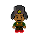
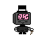
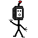

Sobre o jogo
Você assume o papel de John Wolfgang, um jovem carpinteiro que vive em um mundo natural e simples. Após acordar em um ambiente prejudicado por números binários e estruturas futuristas, John embarca em uma jornada para entender a origem dessa transformação. Com a ajuda de Fairy, uma máquina falante construída por ele, John descobre segredos profundos sobre sua própria existência e o propósito do mundo onde vive.
Personagens

Jonh Wolfgang
Um jovem carpinteiro que acorda em um mundo corrompido por tecnologia e números binários, buscando entender o que aconteceu.

Fairy
Uma máquina falante construída por John que o acompanha na jornada e o ajuda a descobrir os segredos daquele mundo.

Celular
Um enorme aparelho esquelético, bem assustador, esconde algum tipo de segredo.

Televisão
Uma imensa máquina assustadora, aparenta ter cérebro humano.

Inimigo
Uma pequena máquina a primeira vista simpática, porém continua sendo um mistério.
Gameplay
Vídeo da gameplay
Jogabilidade
Estilo: Top-Down com exploração livre.
Progressão: Colete componentes de hardware para melhorar o inventário e desbloquear habilidades especiais.
Combate: Use armas de curto e longo alcance, além de habilidades obtidas ao derrotar chefes.
Dungeons Educativas: Fases inspiradas nas disciplinas do curso técnico, onde cada chefe representa uma matéria. Derrote-os para resgatar professores que fornecem dicas para avançar.
Desafios: Cada Dungeon possui mecânicas únicas. Na fase de Lógica de Programação, por exemplo, o jogo muda para plataforma e você precisa corrigir erros de sintaxe em algoritmos dentro de um tempo limite.